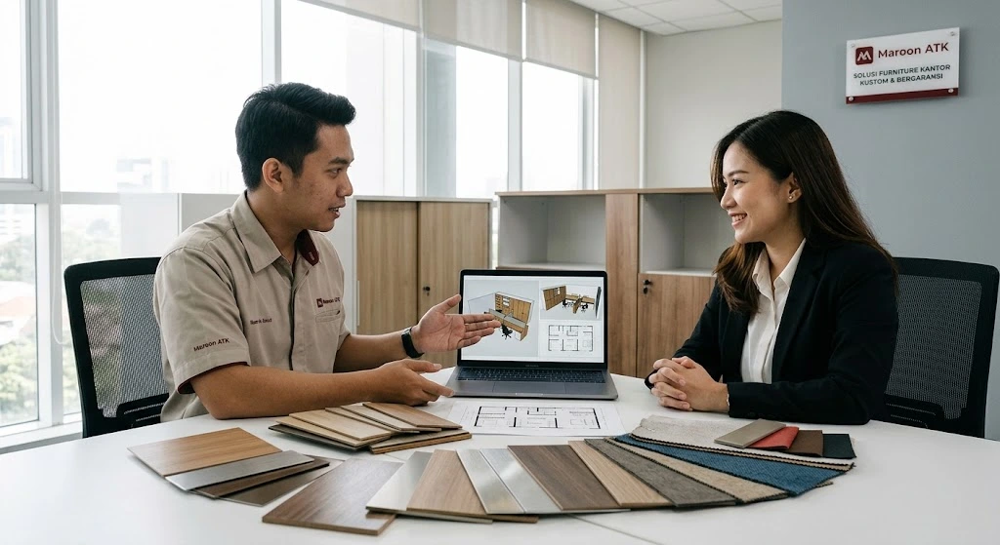
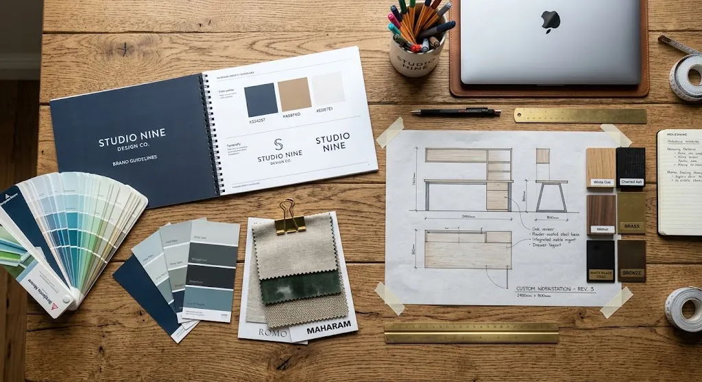
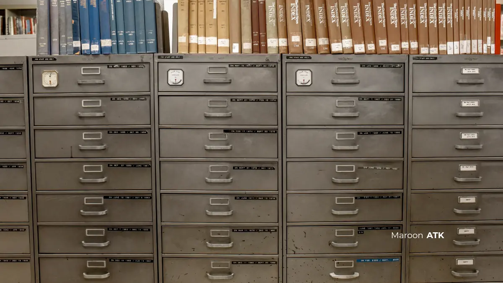
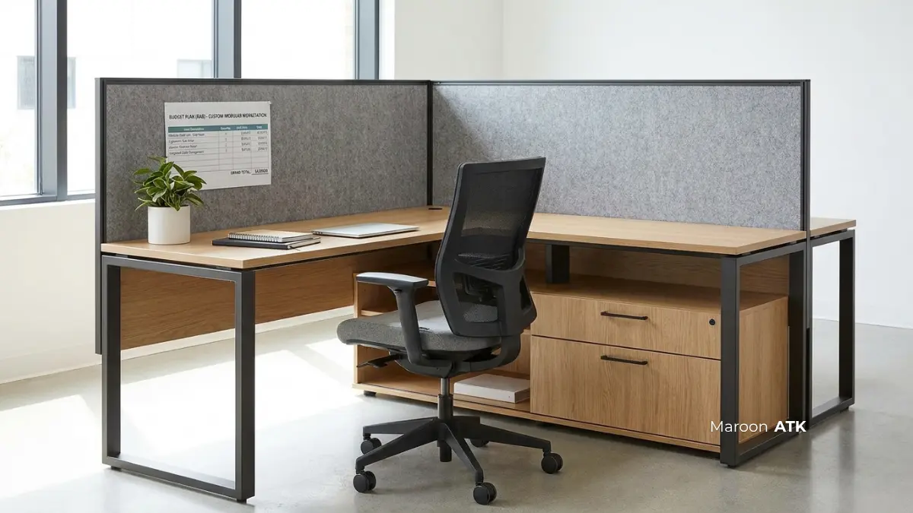

Custom furniture kantor berbasis brand identity adalah furniture yang dirancang khusus mengikuti warna, logo, dan karakter visual perusahaan, sehingga ruang kerja tidak lagi terasa kaku seperti furniture pabrikan berwarna hitam atau abu-abu standar. Konsep ini memungkinkan perusahaan menghadirkan ruang kerja yang secara visual konsisten dengan identitas brand, mulai dari warna dinding, materi presentasi, hingga furniture yang digunakan sehari-hari oleh karyawan maupun dilihat langsung oleh klien yang berkunjung ke kantor.
Startup dan perusahaan dengan budaya kerja dinamis sering merasa furniture kantor pabrikan kurang mencerminkan identitas brand mereka, karena warna yang tersedia umumnya terbatas pada hitam, abu-abu, atau cokelat kayu standar. Ketika sebuah perusahaan menghabiskan banyak sumber daya untuk membangun identitas visual yang solid pada website, aplikasi, dan materi pemasarannya, sangat disayangkan jika ruang kantor tempat tim berkarya justru terasa hambar tanpa nyawa visual yang selaras.
Ulasan ini disusun untuk membantu tim HR dan procurement memahami langkah merancang custom furniture kantor yang benar-benar mencerminkan karakter perusahaan, mulai dari pemilihan warna hingga proses produksi bersama vendor. Jika Anda juga ingin mempelajari standar proteksi fisik produk kustom, Anda dapat membaca ulasan mengenai garansi custom furniture kantor MAROON ATK yang membahas jaminan struktur dan keandalan engsel kabinet.
Apa Itu Custom Furniture Kantor Berbasis Brand Identity?
Secara mendasar, custom furniture kantor berbasis brand identity adalah furniture yang dirancang secara khusus mengikuti panduan warna (color palette), logo, tipografi, serta karakter visual suatu perusahaan. Berbeda signifikan dengan produk massal pabrikan dengan opsi warna kaku, furniture kustom memberikan keleluasaan penuh bagi tim interior untuk menentukan detail setiap sudut perabot.
Konsep ini memungkinkan perusahaan menghadirkan ruang kerja yang secara visual konsisten dengan identitas brand, mulai dari warna dinding, materi presentasi, hingga furniture yang digunakan sehari-hari oleh karyawan maupun dilihat langsung oleh klien yang berkunjung ke kantor. Saat mitra bisnis, investor, atau calon talenta terbaik melangkah masuk ke kantor Anda, perabot kantor yang selaras dengan nilai perusahaan langsung memberikan impresi profesionalisme, dedikasi, dan kultur kerja yang berkelas.

Custom Furniture Kantor Bergaransi Struktur dan Engsel Resmi
Kenali standar proteksi struktur mekanik dan fitting engsel tahan lama untuk pengadaan workstation kantor kustom.
Mengapa Warna Furniture Pabrikan Sering Tidak Cocok dengan Startup?
Furniture pabrikan umumnya dirancang netral agar cocok untuk banyak jenis kantor konvensional, sehingga kurang mencerminkan karakter dinamis dan warna khas yang biasa diusung startup dengan budaya kerja yang lebih santai, kolaboratif, dan kreatif.
Warna netral seperti hitam dan abu-abu memang aman secara visual, namun bagi startup yang ingin menonjolkan citra inovatif, tampilan tersebut justru bisa terasa kaku dan tidak selaras dengan suasana kerja yang ingin dibangun, terutama di area yang sering dilihat klien atau digunakan untuk konten media sosial perusahaan. Kantor startup saat ini berfungsi ganda: sebagai ruang kolaborasi operasional sekaligus panggung branding untuk rekrutmen talenta muda (employer branding) dan materi konten digital.
Ruangan dengan sentuhan warna brand yang tepat terbukti mampu membangkitkan energi kerja positif, menstimulasi daya cipta, serta menumbuhkan rasa kepemilikan (sense of belonging) yang kuat di kalangan karyawan.

Palet warna dan material untuk furniture kantor custom: perpaduan harmonis antara warna aksen brand, tekstur serat kayu, dan elemen logam powder coating menciptakan workstation yang estetis sekaligus berdaya tahan tinggi.
Bagaimana Langkah Merancang Desain Custom Furniture Sesuai Brand Identity?
Merancang perabot kantor kustom tidak memerlukan latar belakang pendidikan arsitektur yang mendalam, asalkan Anda mengikuti tahapan yang terstruktur. Langkah merancang desain custom furniture sesuai brand identity dimulai dengan menentukan palet warna dari panduan brand perusahaan, kemudian memilih material dan membuat sketsa sebelum masuk ke tahap produksi.
Langkah 1: Menentukan Palet Warna dari Panduan Brand (Brand Guideline)
Langkah pertama adalah mengumpulkan elemen visual brand seperti warna utama, warna sekunder, dan jenis font yang biasa digunakan, karena elemen ini akan menjadi acuan warna finishing dan detail furniture yang akan diproduksi. Dalam brand guideline biasanya tercantum kode warna presisi seperti HEX, RGB, atau Pantone.
Kunci penting dalam tahap ini adalah proporsi warna. Tidak semua bagian meja harus dilapisi warna utama brand Anda yang mencolok (misalnya merah menyala, oranye cerah, atau biru neon). Terapkan aturan rasio interior 60-30-10:
- 60% Warna Dominan Netral: Gunakan pada daun meja utama atau badan lemari arsip (seperti putih hangat, abu-abu muda, atau motif kayu oak alami) guna menjaga kenyamanan pandangan mata saat bekerja seharian.
- 30% Warna Sekunder: Terapkan pada rangka kaki meja hollow baja powder coating, partisi pembatas antar staf, atau pintu kabinet gantung.
- 10% Warna Aksen Brand (Hero Color): Berikan sentuhan warna identitas visual brand pada lis tepi meja (edging), pegangan laci custom, kain pelapis akustik (fabric divider), atau bantalan kursi kerja.
Langkah 2: Memilih Kombinasi Material Dasar dan Finishing
Setelah palet warna ditentukan, langkah berikutnya adalah memilih material dasar furniture, seperti kombinasi kayu dengan aksen logam atau kaca, disesuaikan dengan konsep interior kantor secara keseluruhan.
Sebagai contoh, startup teknologi dengan konsep modern industrial sangat cocok memadukan rangka besi pipa hollow ber-finishing cat oven matte dengan top table papan olahan laminasi HPL bermotif serat kayu hangat. Untuk memastikan keawetan jangka panjang dari serangan hama dan kelembapan ruangan ber-AC, pastikan Anda memahami standar material custom furniture kantor anti rayap yang menggunakan kombinasi rangka baja cold-rolled dan pelapis HPL bersertifikasi grade E1.
Langkah 3: Membuat Sketsa Awal dan Moodboard Desain
Tahap ketiga adalah membuat sketsa atau moodboard sederhana yang menggambarkan tampilan akhir furniture, sebelum didiskusikan lebih lanjut bersama vendor untuk memastikan kelayakan produksi dari sisi teknis dan anggaran. Anda bisa mengumpulkan referensi foto penataan workstation, contoh warna sampel HPL, dan layout kasar denah ruangan menggunakan platform digital seperti Canva atau Pinterest.
Dengan membawa moodboard visual saat berdiskusi dengan vendor custom furniture seperti MAROON ATK, konsultan interior dapat langsung menerjemahkan visi Anda ke dalam gambar kerja denah 2D dan visualisasi 3D fotorealistis secara gratis dan presisi.

Standar Material Custom Furniture Kantor Anti Rayap dan Lembap
Perbandingan ketahanan material rangka besi dan pelapis HPL untuk kantor bebas rayap di 5 kota besar Indonesia.
Apa Saja Elemen Desain yang Bisa Dikustomisasi?
Banyak pengelola kantor mengira bahwa custom furniture hanya sebatas mengganti warna cat meja. Faktanya, elemen yang umum dikustomisasi meliputi warna finishing, bentuk pegangan laci, logo pada permukaan furniture, serta kombinasi material seperti kayu dan logam sesuai konsep interior yang diinginkan perusahaan.
1. Elemen Visual & Identitas Grafis
- Warna dan Tekstur Finishing: Ratusan pilihan motif HPL, mulai dari matte warna solid brand, tekstur serat kayu alami, pola semen ekspos, hingga motif marmer elegan untuk meja direksi dan resepsionis.
- Aksen Logo Korporat: Penempatan logo perusahaan menggunakan teknik laser cutting plat besi, emboss akrilik timbul, atau sablon UV presisi tinggi pada bagian depan counter resepsionis dan backdrop ruang rapat utama.
- Kustomisasi Pegangan Laci (Handle) & Kaki Meja: Bentuk pegangan laci minimalis tanpa tonjolan (finger groove), aksen brass metal gold, atau kaki meja profil miring (loop leg) bercat powder coating khusus sesuai tema brand.
2. Elemen Fungsional & Efisiensi Kerja
Selain elemen visual, beberapa perusahaan juga mengkustomisasi elemen fungsional seperti ukuran laci penyimpanan atau penambahan rak kecil pada meja kerja, sehingga furniture tidak hanya menarik secara visual tetapi juga menyesuaikan kebiasaan kerja tim di kantor tersebut.
- Jalur Manajemen Kabel Terintegrasi (Wire Trunking): Modul stopkontak pop-up, port USB fast-charging, dan soket LAN HDMI yang tertanam rapi di daun meja kerja staf sehingga area kerja bebas dari lilitan kabel yang berantakan.
- Partisi Akustik Berwarna Brand: Panel pembatas workstation dilapisi bahan fabric atau acoustic felt peredam gema, memberikan privasi suara saat melakukan video conference sekaligus mempercantik pemandangan ruangan.
- Kompartemen Penyimpanan Khusus: Lemari arsip modular, credenza samping, dan laci mobile pedestal dengan sistem kunci sentral yang disesuaikan dengan volume dokumen tim operasional maupun tim legal.

Panduan Menyusun Anggaran Pengadaan Furniture Custom di 5 Kota
Rincian estimasi RAB fabrikasi workstation custom presisi untuk efisiensi investasi aset kantor korporasi.
Bagaimana Proses Kerja Sama dengan Vendor Custom Furniture Berjalan?
Proses kerja sama dengan vendor custom furniture umumnya dimulai dari konsultasi kebutuhan dan brand guideline, dilanjutkan dengan penyusunan desain, produksi, hingga pengiriman dan instalasi di lokasi kantor.
Salah satu klien kami dari perusahaan rintisan berbasis teknologi di Jakarta Selatan menyampaikan bahwa proses konsultasi warna dan material berjalan cukup fleksibel, karena tim desain dapat menyesuaikan beberapa alternatif material sebelum keputusan produksi final diambil, sehingga hasil akhir furniture benar-benar sesuai dengan visualisasi brand yang mereka inginkan.
Tahapan kemitraan pengadaan kustom bersama MAROON ATK berjalan melalui 5 alur transparan:
- Survey Lokasi & Pengukuran Fisik: Tim teknisi memeriksa dimensi denah ruang, elevasi plafon, posisi stopkontak listrik, dan pilar bangunan untuk mencegah kesalahan ukuran.
- Penyusunan Desain Layout 2D & Visualisasi 3D Gratis: Merancang denah penataan workstation dan render 3D warna riil yang mengacu langsung pada panduan warna brand Anda.
- Pemeriksaan Sampel Material (Sample Swatches): Meninjau langsung sampel ketebalan papan olahan, kartu warna HPL, dan kekuatan lapisan cat besi sebelum surat pesanan disetujui.
- Fabrikasi Presisi di Workshop: Proses produksi menggunakan mesin perkayuan modern dengan kontrol kualitas (QC) bertahap pada setiap sambungan rangka dan laminasi edging.
- Pengiriman, Perakitan & BAST: Pemasangan langsung oleh teknisi internal berpengalaman hingga selesai bersih (turn-key) beserta penandatanganan Berita Acara Serah Terima (BAST) dan penerbitan garansi resmi.
Kesalahan Umum yang Perlu Dihindari Saat Merancang Custom Furniture
Mendesain furniture custom memerlukan kehati-hatian agar anggaran pengadaan tidak terbuang sia-sia untuk hasil yang mengecewakan. Berikut beberapa kesalahan umum yang sering terjadi di lapangan:
- Desain Terlalu Ramai (Visual Noise): Mengaplikasikan terlalu banyak warna kontras brand pada seluruh permukaan perabot membuat ruangan terasa sempit, bising secara visual, dan mengganggu fokus kerja karyawan di ruangan tersebut. Selalu pertahankan warna netral sebagai basis dominan.
- Mengabaikan Aspek Fungsional Demi Estetika Semata: Misalnya memilih warna sangat gelap dengan finishing glossy untuk permukaan meja kerja tanpa memperhitungkan pantulan cahaya lampu atau monitor yang dapat mengganggu kenyamanan mata saat bekerja dalam waktu lama.
- Tidak Menyediakan Brand Guideline yang Jelas: Menentukan warna hanya berdasarkan foto di layar ponsel tanpa kode HEX/Pantone yang terverifikasi. Tampilan warna pada layar digital sering kali berbeda dengan kartu sampel laminasi fisik di dunia nyata.
- Melupakan Akses Perawatan & Jalur Kabel: Memasang meja kustom yang menempel mati ke dinding tanpa lubang kabel (grommet) dan akses stopkontak, menyulitkan tim IT saat melakukan instalasi perangkat kerja staf.
Sebelum memulai proses desain, sebaiknya siapkan panduan brand perusahaan secara lengkap dan diskusikan kebutuhan fungsional bersama tim yang akan menggunakan furniture tersebut sehari-hari.
Untuk melihat pilihan furniture kantor yang dapat dikustomisasi sesuai brand identity Anda, silakan jelajahi katalog produk kami, atau langsung hubungi tim kami untuk konsultasi desain custom furniture kantor sesuai kebutuhan perusahaan Anda.
Wujudkan Custom Furniture Kantor Sesuai Brand Identity Anda
Gratis Konsultasi Warna, Desain Denah 2D/3D, dan Survey Ruangan
Diskusikan konsep interior kantor startup Anda bersama tim konsultan interior MAROON ATK. Dapatkan proposal penawaran harga transparan, sampel material fisik gratis, serta garansi resmi terpercaya.
Kesimpulan: Wujudkan Ruang Kerja Berkarakter yang Menginspirasi Produktivitas
Rangkuman Langkah Desain Custom Furniture
Merancang custom furniture kantor berbasis brand identity adalah investasi strategis untuk memperkuat citra profesional perusahaan sekaligus menciptakan lingkungan kerja yang memicu produktivitas tinggi.
- Harmonisasi Visual Brand: Padukan elemen visual brand guideline dengan proporsi warna yang tepat agar ruangan tetap terasa lapang dan tidak melelahkan mata.
- Keseimbangan Estetika dan Fungsi: Pastikan setiap penyesuaian bentuk meja, laci, dan kabel management dirancang untuk mendukung kenyamanan kerja staf.
- Kolaborasi Vendor Berpengalaman: Percayakan realisasi produksi pada vendor penyedia sarana kantor seperti MAROON ATK yang memiliki workshop terintegrasi, fasilitas render 3D gratis, serta jaminan purna jual resmi.
Pertanyaan Yang Sering Diajukan (FAQ)
Custom furniture kantor berbasis brand identity adalah furniture yang dirancang khusus mengikuti warna, logo, dan karakter visual perusahaan, berbeda dari furniture pabrikan dengan warna standar seperti hitam atau abu-abu.
Furniture pabrikan umumnya dirancang netral agar cocok untuk banyak jenis kantor, sehingga kurang mencerminkan karakter dinamis dan warna khas yang biasa diusung startup.
Langkahnya meliputi menentukan palet warna dari panduan brand, memilih material yang sesuai anggaran, membuat sketsa atau moodboard, lalu berkonsultasi dengan vendor untuk realisasi produksi.
Elemen yang umum dikustomisasi meliputi warna finishing, bentuk pegangan laci, logo pada permukaan furniture, serta kombinasi material seperti kayu dan logam sesuai konsep interior.
Lama produksi dapat bervariasi tergantung kompleksitas desain dan jumlah unit yang dipesan, sehingga sebaiknya dikonfirmasi langsung dengan vendor sejak tahap konsultasi awal.

Ridhan Fahri
Praktisi procurement dan pengadaan operasional korporat yang berfokus pada standarisasi rantai pasok ATK, efisiensi anggaran perlengkapan kantor, integrasi teknologi visual, dan manajemen aset fasilitas B2B di Indonesia.